Arte rupestre della Valle Camonica
Il sito preistorico della Valle Camonica, non ancora completamente esplorato, si estende su di un’area di 70 chilometri. Sono state individuate oltre 40.000 figure scavate su circa 2.400 rocce. Questi petroglifi, di cui esistono esempi anche in Spagna, Francia, Svezia e Gran Bretagna, sono di natura simbolica ed evocano la navigazione, la danza, la guerra, l’agricoltura, la magia, ecc.
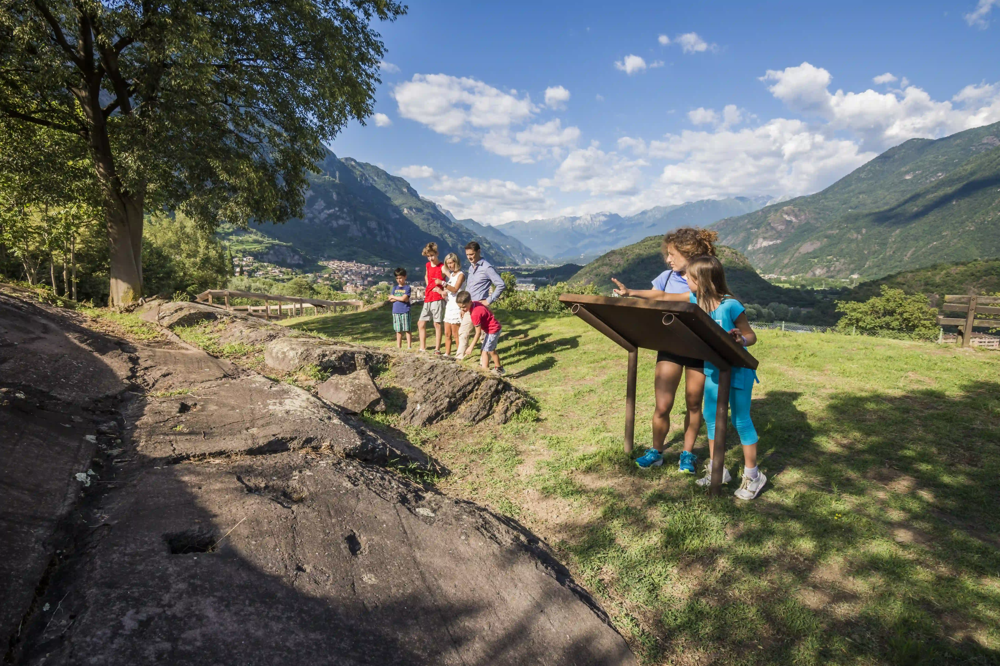
L’espressione artistica dell’Homo sapiens si manifestò in due modi principali: sulle pareti all’interno delle grotte (arte parietale), e su rocce affioranti dal terreno o pareti rocciose esterne alla mercé degli agenti atmosferici (arte rupestre). Le più alte testimonianze mondiali dell’arte parietale preistorica si trovano ad Altamira in Spagna e a Lascaux in Francia, mentre il complesso dell’arte rupestre della Valle Camonica è considerato il più importante a livello mondiale, per la quantità di incisioni, per la sua enorme varietà e per la lunghezza dell’arco temporale che copre.
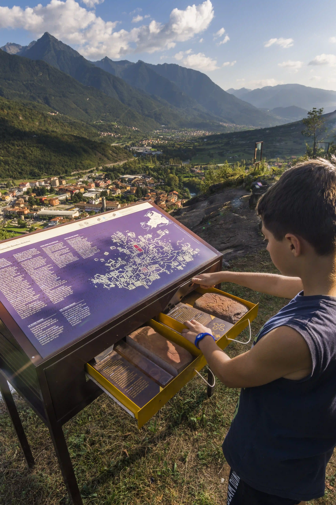
La Valle Camonica occupa l’area settentrionale della provincia di Brescia, fra il Lago d’Iseo e i passi del Gavia e del Tonale. L’Arte rupestre è attestata su tutto il territorio della Valle Camonica, la più vasta delle valli bresciane, attraversata dal fiume Oglio: ad oggi sono state censite oltre 180 località con incisioni, per un totale di circa 2000 rocce istoriate, oltre 300.000 grafemi plurimillenari, distribuiti in oltre 30 dei 42 comuni della Valle. Attualmente i parchi in cui si possono ammirare le incisioni rupestri sono otto. Le incisioni sono state realizzate lungo un arco di tempo di oltre 13.000 anni, dalla fine del Paleolitico Superiore alla fine del I millennio a.C., quando si conclude il grande ciclo dell’arte camuna. La pratica di incidere le rocce, tuttavia, prosegue anche dopo la conquista della valle da parte dei Romani. Le raffigurazioni trattano aspetti della spiritualità e della vita quotidiana degli antichi abitanti della Valle e sono importanti per comprendere la storia dell’Uomo: scoprire e conoscere l’arte rupestre camuna permette di compiere un viaggio unico e indimenticabile nella preistoria e protostoria europea per giungere, attraverso le incisioni di età storica (romana, medievale e moderna), sino al XX secolo.
Villaggio industriale di Crespi d'Adda
Crespi d’Adda è un’eccezionale testimonianza di quei “villaggi operai” che nacquero tra il XIX e il XX secolo in Europa e negli Stati Uniti e che sono l’espressione della filosofia degli industriali illuminati, desiderosi di soddisfare i bisogni dei propri operai. Malgrado la sua sopravvivenza sia stata minacciata dall’evoluzione della condizione socio-economiche, il villaggio di Crespi d’Adda è ancora intatto e ha conservato, in parte, la propria funzione industriale.
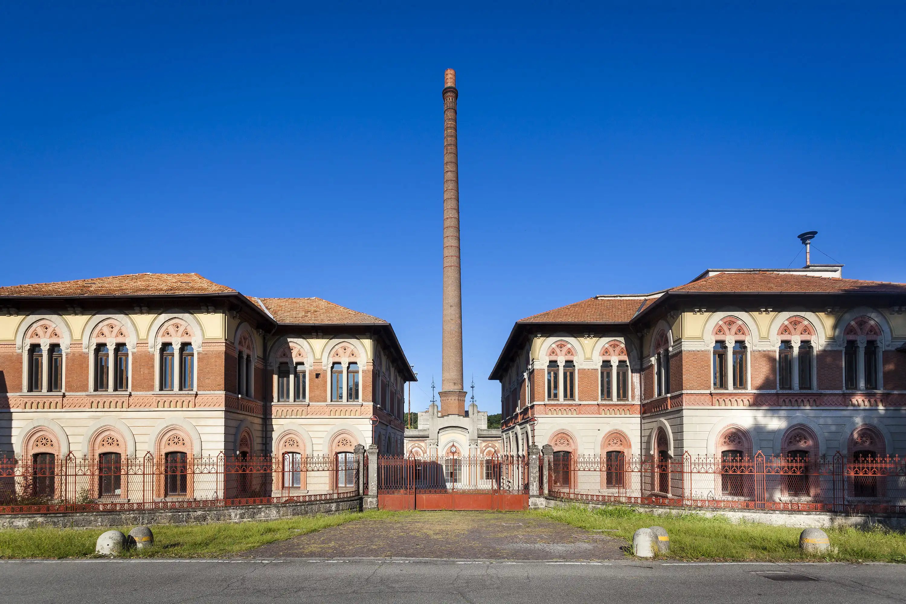
Villaggio industriale di Crespi d'Adda
Crespi d’Adda è uno dei Siti d’archeologia industriale più rilevanti del mondo. La nascita del villaggio operaio avvenne quando, nel 1877, Cristoforo Benigno Crespi acquistò 85 ettari di terra dal Comune di Canonica d’Adda e Capriate d’Adda; gli fu concessa l’autorizzazione all’utilizzo delle acque del fiume Adda per le attività produttive del cotonificio. Lo stabilimento venne avviato nel 1878 e si iniziò la costruzione del borgo operaio vero e proprio. Nel 1889, Silvio Benigno Crespi, figlio di Cristoforo Benigno, subentrò al padre nella conduzione delle imprese di famiglia. Il villaggio operaio sull’Adda si sviluppò fino agli anni Venti del Novecento.
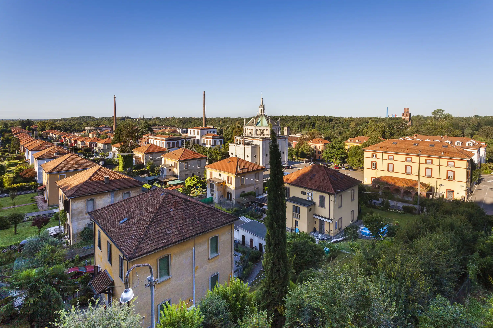
Il Villaggio di Crespi d’Adda nacque come complesso urbanistico armonioso e integrato al territorio. Furono necessari lavori idraulici per rendere efficiente l’impiego delle acque dell’Adda come risorsa energetica e come elemento indispensabile per alcune fasi di lavorazione. Lo stabilimento era un cotonificio e nell’area industriale-produttiva si trovavano gli edifici per la tessitura, la filatura e la tintura dei tessuti. Magazzini e altri edifici per le attività amministrative erano vicini agli stabili adibiti ad officine, non solo per la fabbrica ma anche per i bisogni del villaggio. Nell’impianto urbanistico i quartieri residenziali erano disposti secondo un ordine gerarchico e razionale che rispecchiava il grado e la funzione dei lavoratori. Oltre alle palazzine per alloggiare le prime maestranze impegnate nell’edificazione e nell’avviamento dell’impianto, vennero realizzate le casette a schiera degli operai, dotate di lavatoio, orto e giardino, e i villini per capireparto e dirigenti. La struttura urbanistica del complesso, perciò, era progettata per ricalcare l’organizzazione del lavoro, testimoniando come i rapporti umani fossero modellati sui rapporti economici. Vi erano poi gli spazi collettivi, con i fabbricati speciali della Chiesa e del Cimitero, e quelli adibiti a scuola, asilo, cooperativa, dopolavoro, mensa, albergo, bagni pubblici, lavatoio e campo sportivo. Il villaggio venne dotato di una uniformità estetica, dove essenzialità e geometria erano ingentilite da decorazioni neogotiche in cotto. Edificio speciale era la trionfale Villa dei Crespi, che esibiva il gusto neo medievale in voga all’epoca e venne dotata di una torre alta 50 metri che risulta evidente tutt’oggi nel paesaggio.
Santa Maria delle Grazie e Cenacolo Vinciano
Il refettorio del Convento di Santa Maria delle Grazie è parte integrante di questo complesso architettonico, iniziato a Milano nel 1463 e rielaborato alla fine del XV secolo dal Bramante. Sulla parete nord vi è l’Ultima Cena, capolavoro ineguagliabile dipinta tra il 1495 e il 1497 da Leonardo da Vinci, il cui lavoro è stato quello di annunciare una nuova era nella storia dell’arte. 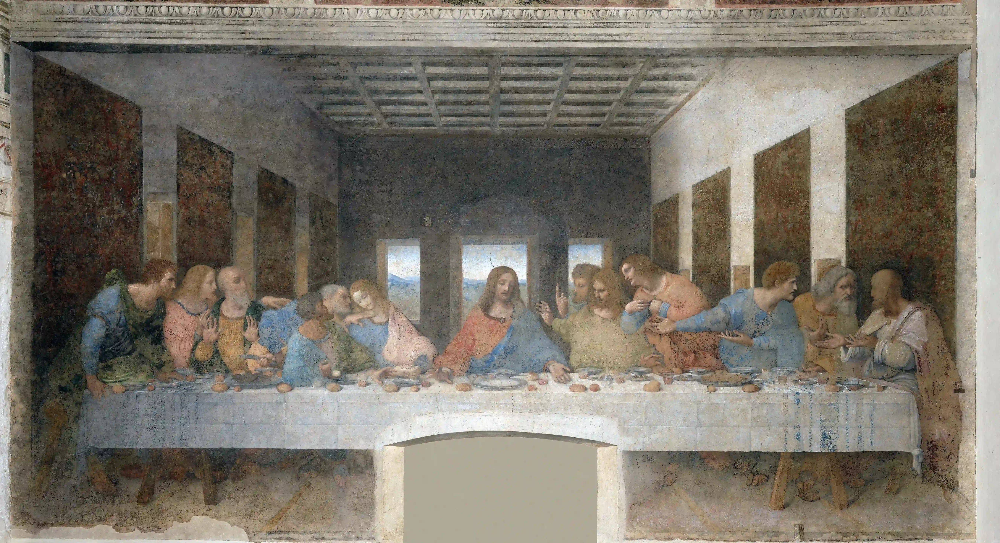
All’interno del complesso conventuale domenicano di Santa Maria delle Grazie è racchiuso un tesoro dell’arte mondiale, l’opera che forse assieme a poche altre rappresenta il senso profondo dell’arte umanistica e allo stesso tempo il manifesto programmatico di Leonardo. Nell’ala occidentale di uno dei tre chiostri del complesso (il Chiostro dei Morti) si trova il Refettorio, noto per la presenza del Cenacolo. L’affresco che ritrae Gesù in compagnia degli Apostoli durante l’Ultima Cena venne creato dal genio di Leonardo da Vinci; esso risale agli ultimi anni dell’ultimo decennio del XV secolo: il maestro vi lavorò tra il 1494 e il 1498. 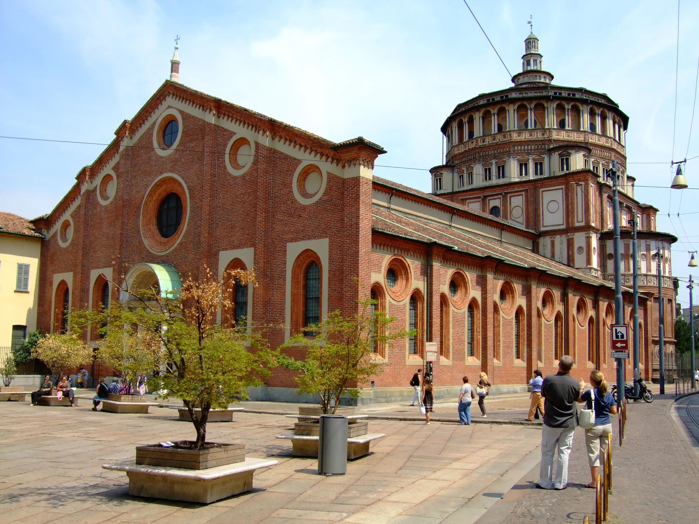 Per Leonardo è molto importante illustrare i ”moti dell’animo”, infatti nel Trattato della Pittura scrive che il bravo pittore deve saper rappresentare non solo l’aspetto esteriore dell’uomo ma anche i suoi pensieri e le sue emozioni. Per poter dipingere pensieri ed emozioni si devono utilizzare i gesti e gli atteggiamenti, i movimenti delle membra. Leonardo decide quindi di rappresentare l’attimo appena successivo alle parole di Gesù “Uno di voi mi tradirà“. È il momento più drammatico della Cena: ogni apostolo si domanda, e domanda agli altri, chi può essere il traditore. Leonardo si concentra sull’effetto che le parole di Gesù provocano sugli apostoli, sulla loro reazione.
Sacri Monti del Piemonte e Lombardia
I nove Sacri Monti dell’Italia settentrionale sono gruppi di cappelle e altri manufatti architettonici eretti fra il XVI e il XVII secolo, dedicati a differenti aspetti della fede cristiana. In aggiunta al loro significato simbolico e spirituale, possiedono notevoli doti di bellezza, virtù e gradevolezza, e risultano integrati in un ambiente naturale e paesaggistico di colline, boschi e laghi. Contengono inoltre reperti artistici molto importanti (affreschi e statue).

I Sacri Monti sono luoghi dell’anima e sono il frutto di un grandioso progetto di sacralizzazione del paesaggio, attuato dalla Chiesa Cattolica tra fine Quattrocento e il Seicento, nella difficile stagione della Controriforma. Dedicati alle storie di Cristo e dei Santi, i Sacri Monti divennero sedi privilegiate di un catechismo raccontato con le immagini, caro alla Chiesa controriformata, sovente illustrato in precedenti luoghi di culto pagani o paleocristiani. Il tema della montagna sacra si sostanzia nell’evocazione del cammino di Cristo verso il Calvario; il percorso che i fedeli sono chiamati a compiere diviene reale pellegrinaggio attraverso un itinerario simbolico di stazioni monumentali che rendono sacro lo spazio naturale. In questa ascesa spirituale, la componente architettonica, artistica e quella naturale si fondono in una unità indissolubile che rende il paesaggio strumento integrante dell’azione pedagogica religiosa. Per questo motivo, i Sacri Monti sorsero sempre in posizione sopraelevata, su colline sovrastanti il centro abitato o su alture isolate e impervie, in modo che la difficoltà fisica di raggiungerli divenisse momento di contemplazione e purificazione.
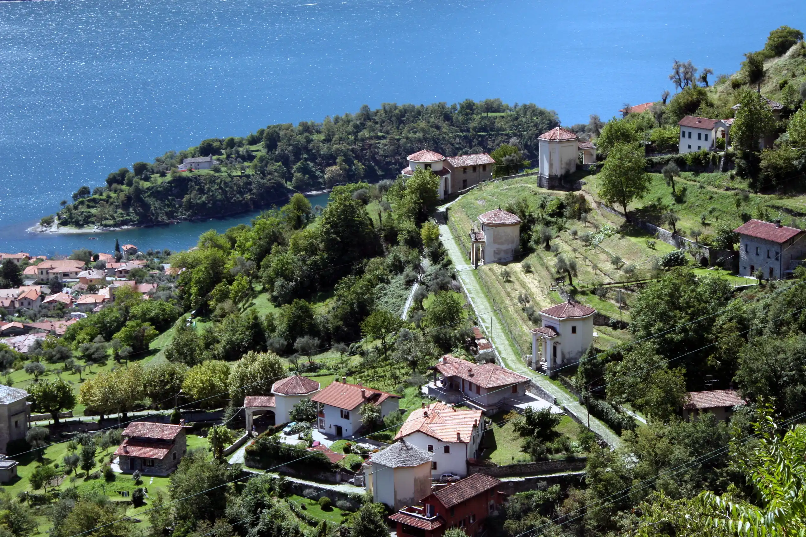
In Lombardia, in posizione panoramica, si trovano due sacri monti: ad Ossuccio (sulla sponda occidentale del Lago di Como) si erge il Santuario della Madonna del Soccorso; a Varese il Santuario di Santa Maria del Monte, luogo di pellegrinaggio sin dal Medioevo lungo le pendici del Monte Velate.
Monte San Giorgio
Il Sito si trova a cavallo tra il territorio italiano e quello svizzero, e l’area interessata dall’iscrizione UNESCO ha un valore geo-paleontologico a livello mondiale per i reperti fossili databili al Triassico Medio (tra 242 e 230 milioni di anni fa), i quali permettono di studiare l’evoluzione di una grande varietà di fauna marina e terrestre. A partire dal XIX secolo, dagli scavi sono stati rinvenuti esemplari di specie rare e uniche.
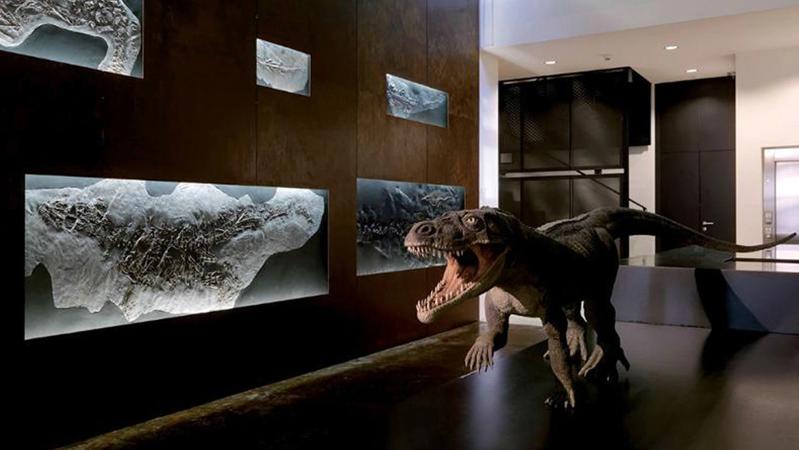
Il Monte San Giorgio ha l’aspetto di una boscosa montagna a piramide, che si affaccia panoramicamente dai suoi 1097 metri di altezza sullo specchio d’acqua del lago. Il primato di tale area naturalistica consiste nella presenza di una altissima concentrazione di fossili, vissuti nel periodo geologico del Triassico Medio. All’epoca, qui vi era un ambiente subtropicale, una sorta di laguna: un braccio di mare profondo soltanto un centinaio di metri con isolotti e banchi di sabbia, separato dal mare aperto da una scogliera di alghe calcaree. Queste condizioni facilitarono il depositarsi sul fondale delle carcasse di animali morti o travolti dalle onde; grazie alla scarsa circolazione dell’acqua all’interno della laguna e alle basse concentrazioni di ossigeno, i resti di rettili volanti, terrestri e marini ed altri organismi (soprattutto pesci) rimasero intatti e iniziarono a fossilizzarsi, imprigionati negli strati di rocce e di sedimenti. Il sito è condiviso da Italia e Svizzera e le località italiane inserite nella zona dell’iscrizione UNESCO sono in provincia di Varese, e riguardano i comuni di Porto Ceresio, Besano, Viggù.
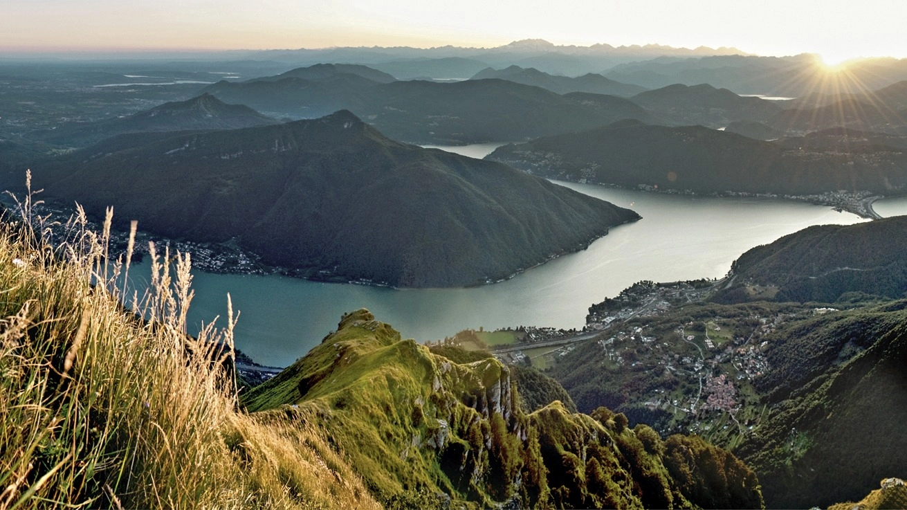
Mantova e Sabbioneta
Antichissimo centro etrusco, Mantova fiorì sotto la signoria dei Gonzaga (XIV-XVII secolo) e divenne esempio eccelso delle raffinate corti rinascimentali italiane. Sabbioneta è considerata il modello della “città ideale”, e in essa si realizzano i valori dell’Umanesimo. Mantova e Sabbioneta esercitarono un’influenza sull’urbanistica, l’architettura, l’arte mondiale nei secoli a seguire. 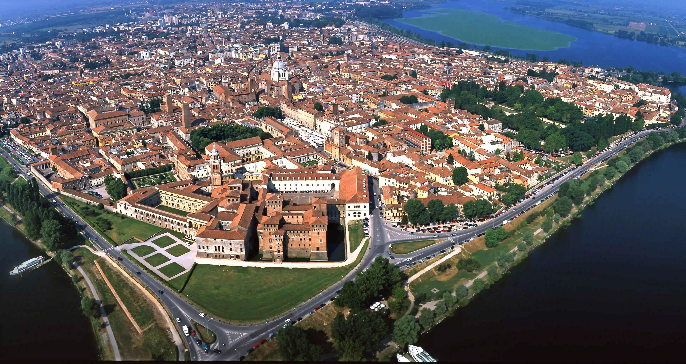
Lo sviluppo della città di Mantova si misura sia dall’espandersi della cinta muraria che dal progressivo arricchimento architettonico e monumentale. L’arrivo al potere della famiglia Gonzaga portò con sé il vento di rinnovamento che diffuse arte e architettura come ideali non solo estetici ma anche di vita. L’apice della trasformazione prestigiosa ebbe luogo grazie ai gusti dei potenti e al lavoro di grandi artisti, maestri architetti e pittori quali Andrea Mantegna, Leon Battista Alberti e Giulio Romano. Esempi importanti di questo nuovo modello di vita urbana furono e rimangono fino a noi oggi: il Castello di San Giorgio (dove Ludovico III trasferì la propria residenza e dove sono presenti i celebri affreschi di Mantegna), la Chiesa di San Sebastiano e la Basilica di Sant’Andrea, Palazzo Te. 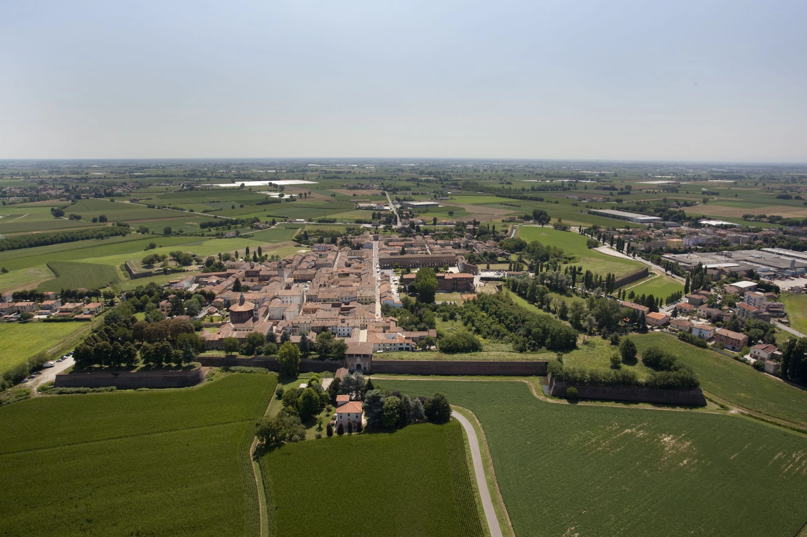
La Ferrovia Retica nel paesaggio del Abula e del Bernina
La Ferrovia Retica è un esempio eccezionale di tecnologia, ingegneria e architettura, un unicum armonico e spettacolare in cui l’intervento umano è riuscito ad integrarsi in un paesaggio di alta montagna. Realizzate tra la fine del secolo XIX e l’inizio del XX secolo per collegare e aprire le zone delle Alpi centrali al resto dell’Europa, le due tratte ferroviarie dell’Albula e del Bernina, ora unificate dalla Compagnia Ferroviaria Retica, si distinguono per il valore storico, quale adattamento umano ad un contesto naturale difficile; per il valore socio-economico, per aver sbloccato l’isolamento delle comunità montane favorendo la circolazione di idee, culture e persone; per il loro significato nella storia della tecnologia, quale esempio di ferrovia a scartamento ridotto. 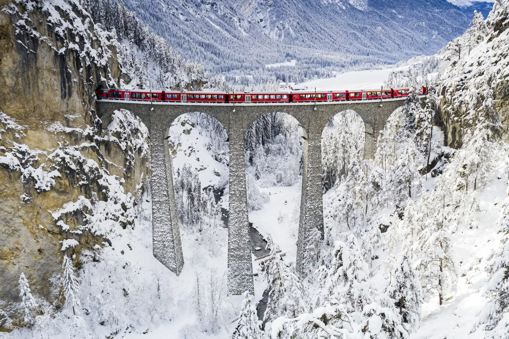
La Ferrovia Retica nel paesaggio del Abula e del Bernina
La Ferrovia Retica è nota come trasversale alpina tra le più ripide e alte al mondo, con 55 gallerie e 196 viadotti. Il Sito ha carattere transfrontaliero, cioè compete sia all’Italia che alla Svizzera perché l’itinerario della Ferrovia Retica, funzionante in tutte le stagioni, si snoda in entrambe le nazioni.
In territorio lombardo, la ferrovia del Bernina, -inaugurata nel 1910 - collega St. Morizt a Tirano in provincia di Sondrio. Si sviluppa in un tracciato in forte pendenza e raggiunge la quota oltre 2000 m s.l.m. superando il Passo del Bernina e offrendo spettacolari viste su scintillanti ghiacciai perenni, ombrose gole boscose, pascoli in quota.
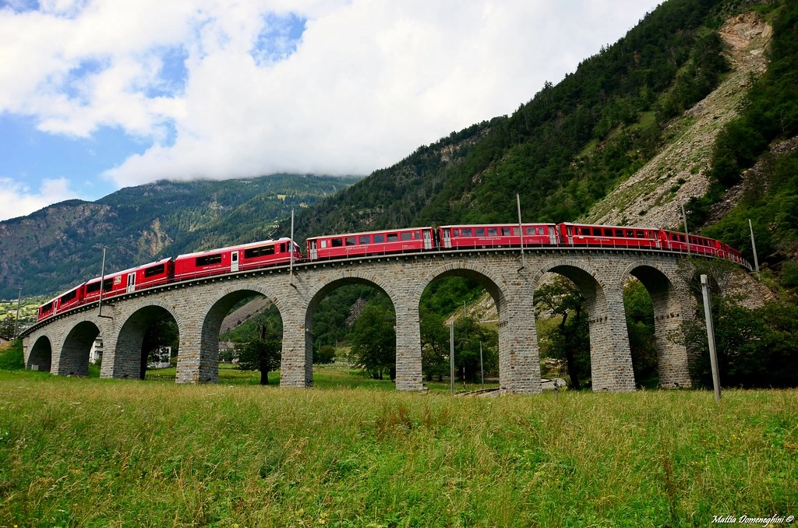
I siti palafitticoli preistorici dell’arco alpino
I siti palafitticoli preistorici dell’arco alpino sono dislocati tra Svizzera, Austria, Francia, Germania, Italia e Slovenia, e punteggiano un territorio vasto ma uniformemente contraddistinto da zone umide, le quali hanno permesso l’eccezionale conservazione dei resti delle comunità preistoriche. Questo gruppo di aree archeologiche, riconosciuto di valore universale nel 2011, comprende 111 villaggi risalenti tra 5000 e il 500 a.C.; tra questi, 19 sono in Italia, in particolare attorno al Lago di Garda e a quello di Varese, e dislocati in cinque regioni, Lombardia, Veneto, Piemonte, Friuli-Venezia Giulia e Trentino-Alto Adige. La loro testimonianza permette di far luce sul profilo delle comunità preistoriche europee con un ricco patrimonio di reperti e resti di insediamenti su palafitte.
Gli insediamenti palafitticoli sono siti spondali situati in prossimità di laghi, fiumi o torbiere. La loro ubicazione in ambienti anaerobici (privi di ossigeno) ha permesso una eccellente conservazione di materiali organici che hanno restituito numerose informazioni relative al mondo delle prime comunità agricole europee. Pratiche agricole, allevamento e innovazioni tecnologiche sono state ricostruite con un elevato grado di precisione, fornendo uno spaccato della vita quotidiana tra il 5000 e il 500 a.C. Questo arco temporale, superiore ai 4000 anni, coincide con una delle fasi più importanti della storia dell’umanità.
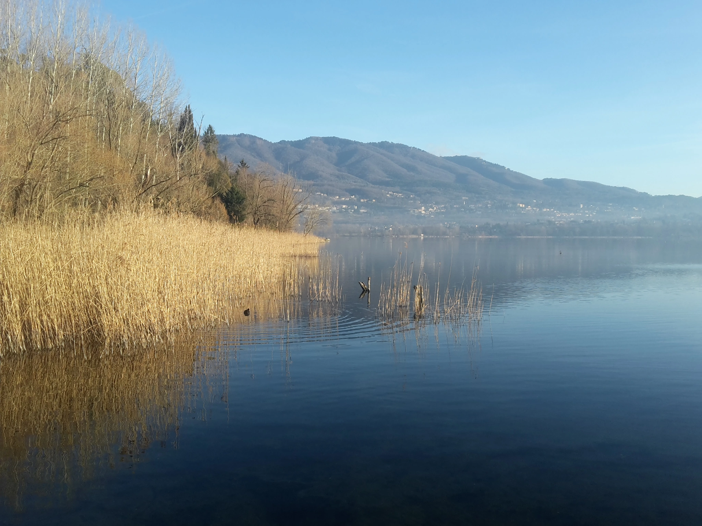
I siti palafitticoli preistorici dell’arco alpino
Le palafitte, organizzate in gruppi o in villaggi, sono delle capanne sostenute da pali. Queste strutture, dotate di una piattaforma lignea orizzontale, potevano erigersi direttamente su un lago, una palude, un corso d’acqua oppure essere collocate sulla sponda di uno di essi. A seconda del tipo di terreno, del clima e di specifiche esigenze degli abitanti sono state realizzate palafitte su bonifica (costruite sul terreno) e aeree (sospese sopra il pelo dell’acqua). Diversamente dalle capanne su bonifica, contraddistinte da una base di pali orizzontali sovrapposti, quelle aeree sono caratterizzate da pali di sostegno verticale, la cui estremità inferiore è appuntita per essere conficcata più facilmente nel terreno. Le strutture aeree potevano essere congiunte tra loro o alla terraferma attraverso ponti; in alternativa, il tavolato orizzontale poteva essere unico, esteso all’intero gruppo di abitazioni. Come materiali da costruzione oltre a pali di legno e tronchi d’albero venivano impiegati paglia e canne. Vivere in villaggi come questi aveva diversi vantaggi: permetteva di adattarsi alle variazioni dei livelli dei corsi d’acqua o dei laghi, consentiva di rimanere vicino alle fonti di acqua e di cibo e di difendersi da nemici e animali selvatici.
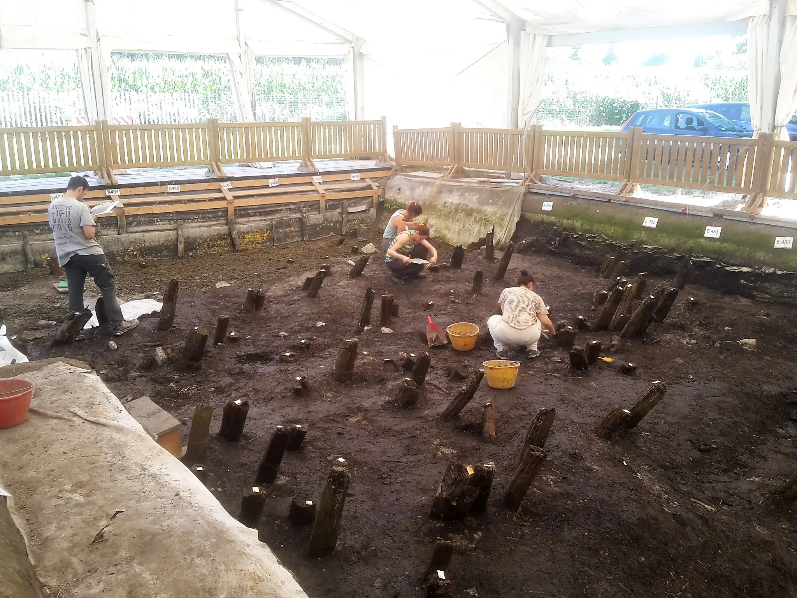
In Lombardia sul Lago di Varese sono state identificate le strutture palafitticole più antiche, risalenti all'inizio del Neolitico, mentre nell'area del Lago di Garda si trova la maggiore concentrazione di palafitte con più di 30 abitati.
I Longobardi in Italia. I luoghi del potere
Longobardi erano un popolo germanico di origine scandinava stanziatosi in territorio cristiano e convertitosi al cristianesimo; assimilarono i valori materiali e culturali ereditati dal mondo romano. Essi furono in contatto anche con le realtà bizantine, ellenistiche e mediorientali, rappresentando un fenomeno unico per le sue caratteristiche monumentali, stilistiche, più in generale culturali. I luoghi del potere dei Longobardi in Italia sono l’eco e il simbolo di quel popolo, prezioso tesoro di quella che fu una delle più importanti radici dell’Europa Medievale e del mondo cristiano occidentale.
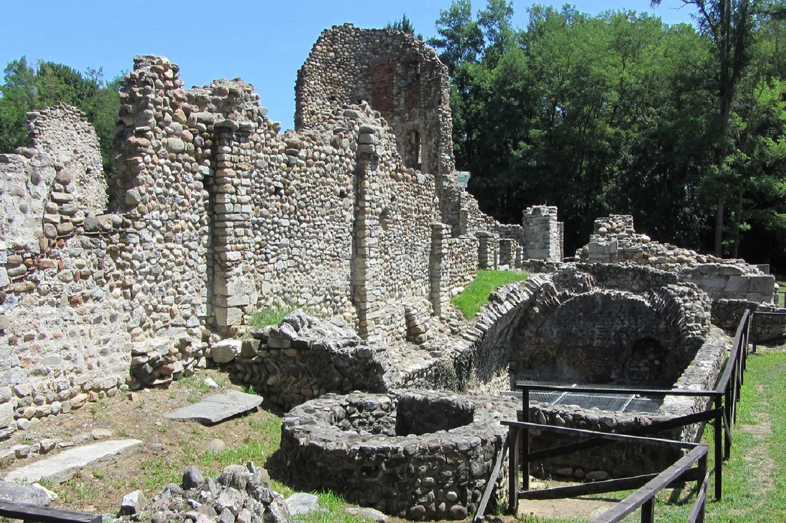
In Lombardia sul Lago di Varese sono state identificate le strutture palafitticole più antiche, risalenti all'inizio del Neolitico, mentre nell'area del Lago di Garda si trova la maggiore concentrazione di palafitte con più di 30 abitati.
Quando, nel 568, i Longobardi entrarono nella penisola italiana condotti da re Alboino, quel che trovarono furono i resti materiali, a livello di strutture, e immateriali, a livello di tradizioni istituzionali ed eredità culturale, del mondo romano decaduto. Trovarono altresì un territorio che presentava molte caratteristiche positive, sia dal punto di vista fisico e climatico, sia per la sua funzione di crocevia tra Oriente e Occidente. Il processo di integrazione sul territorio e con le genti da un lato, dall’altro l’innestarsi di una serie di novità di matrice germanica, furono il collante che garantì nella storia una certa continuità tra l’Età Antica e il Medioevo. Una delle manifestazioni pratiche di tale fenomeno di integrazione e sintesi fu l’uso che i Longobardi fecero dei resti antichi, il reimpiego di materiali lapidei e architettonici più antichi derivanti da necropoli o edifici abbandonati, soprattutto di epoca romana. Nei luoghi dove si insediarono, i Longobardi trovarono molte risorse di questo tipo e di esse procedettero al riuso, talvolta, come nel caso del castrum di Castelseprio, in modo conservativo rispetto alla funzionalità (riutilizzarono le strutture della fortificazione per la medesima funzione), talaltra in modo innovativo, come nel caso dell’utilizzo delle antiche lastre marmoree del Tempietto di Cividale del Friuli, poste a pavimentazione del presbiterio.
In Lombardia, troviamo il complesso monastico di San Salvatore-Santa Giulia a Brescia, uno dei maggiori esempi di architettura religiosa alto medioevale, testimonianza, dal punto di vista sociale, dell'appoggio dei Longobardi ai movimenti monastici. A Castelseprio (VA) si trova l’area del castrum, avamposto militare romano e ostrogoto, trasformato dai Longobardi prima in una stazione commerciale e successivamente in un luogo di preghiera, con l'edificazione della Basilica di San Giovanni Evangelista, della Chiesa di Santa Maria foris portas e del Monastero di Torba.
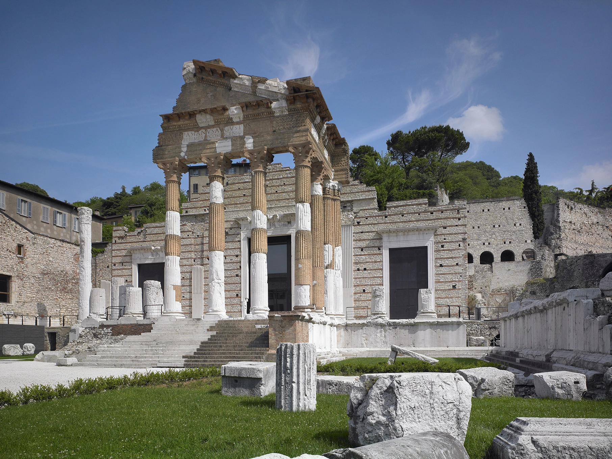
Opere di difesa veneziane tra il XVI ed il XVII secolo: Stato da Terra – Stato da Mar Occidentale
Le Opere di difesa veneziane tra il XVI ed il XVII secolo: Stato da Terra – Stato da Mar Occidentale formano un sito seriale transnazionale presentato dall’Italia insieme con Croazia e Montenegro. Il sito raccoglie un insieme straordinario dei più rappresentativi sistemi difensivi alla moderna realizzati dalla Repubblica di Venezia, progettati dopo la scoperta della polvere da sparo e dislocati lungo lo Stato de Terra e lo Stato de Mare. Per decisione del Comitato del Patrimonio Mondiale, entrano a far parte del sito Unesco le opere di difesa presenti a Bergamo, Palmanova (Ud), Peschiera del Garda (Vr) per l’Italia, Zara e Sebenico per la Croazia, Cattaro per il Montenegro. 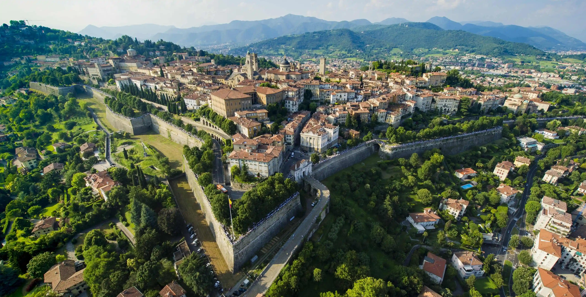
Opere di difesa veneziane tra il XVI ed il XVII secolo: Stato da Terra – Stato da Mar Occidentale
n Lombardia a Bergamo, la Città Alta è circondata da mura, capolavoro di ingegneria militare costruite dai Veneziani nel corso della dominazione cinquecentesca in Lombardia; le mura di Bergamo, volute per ragioni politiche e mai utilizzate come reale difesa, appaiono come una gigantesca fortezza con baluardi dotati di vie di fuga e strade per rifornimenti, postazioni di cannoni, saloni per le truppe e per il deposito di munizioni.
La città fortificata di Bergamo rappresenta l’estremità più occidentale del sistema di difesa dello Stato di Terra della Serenissima per difendersi dalle potenze europee. Le mura di Bergamo vennero costruite fra il 1561 e il 1588 dalla Repubblica di Venezia per arginare gli attacchi nemici, anche se non subì mai assedi. Le fortificazioni hanno un tracciato di oltre 6 chilometri e comprende 14 baluardi, 2 piattaforme, 100 aperture per bocche da fuoco, 2 polveriere, 4 porte. Alcuni tratti di fortificazione erano già presenti in epoca romana ma agli inizi del Cinquecento si trovavano in condizioni di estrema decadenza e vennero quasi totalmente sostituite dalla nuova opera. Oggi appaiono come una gigantesca fortezza con baluardi dotati di vie di fuga e strade per rifornimenti, postazioni di cannoni, saloni per le truppe e per il deposito di munizioni.
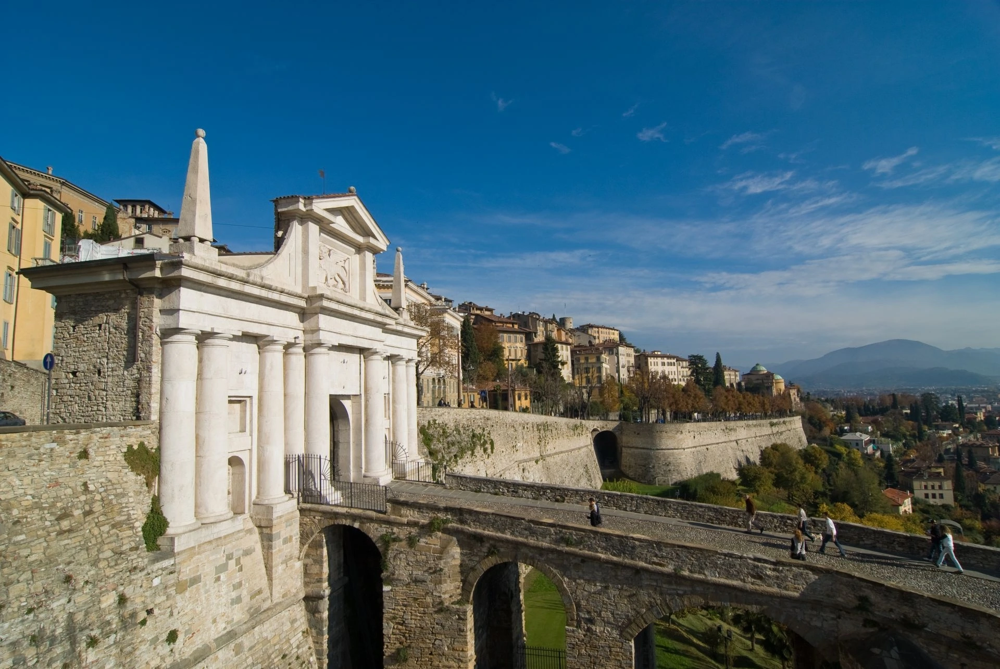